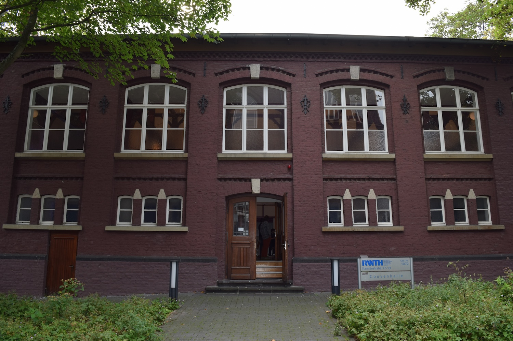

Workshop Venue: Couvenhalle, Aachen

Address
Couvenhalle
Kármánstraße 17-19
52062 Aachen, Germany
The Couvenhalle is a historic hall built in 1897, originally part of the Couven Gymnasium in the center of Aachen. Set just steps from the famous Aachen Cathedral and the historic Markt, it offers an atmospheric setting for the workshop — a beautiful venue where history and science meet.
The hall is located in Aachen's old town, within walking distance of numerous hotels, restaurants, and public transport connections.
📍 View on Map 🗺 Google MapsAbout Aachen
Aachen is a city in the westernmost corner of Germany, close to the Belgian and Dutch borders. It is famous for its imperial history — Charlemagne made it the seat of his empire and built the magnificent Palatine Chapel, now the core of Aachen Cathedral, a UNESCO World Heritage Site since 1978.
Today Aachen is home to RWTH Aachen University, one of Europe's leading technical universities, and boasts a vibrant student and research community. The city's compact old town, with its thermal springs, medieval architecture, and lively café culture, makes it a welcoming destination for visitors from around the world.
Getting to Aachen
By Train
Aachen Hauptbahnhof (main railway station) is well-connected by high-speed and intercity trains. The Thalys connects Aachen to Brussels (approx. 45 min) and Paris (approx. 2 h). ICE trains link Aachen to Cologne (approx. 35 min), Frankfurt (approx. 2 h), and other major German cities. From the station, the old town and venue are reachable by bus or on foot (approx. 15 min).
By Air
The nearest airports are Cologne/Bonn Airport (CGN, approx. 80 km), Düsseldorf Airport (DUS, approx. 90 km), Brussels Airport (BRU, approx. 110 km), and Maastricht Aachen Airport (MST, approx. 30 km). Direct bus and train connections from these airports to Aachen are available.
By Car
Aachen is situated at the junction of several motorways (A4, A44). The city centre has paid parking garages; the venue is most conveniently reached on foot or by local bus.
Accommodation
A list of recommended hotels near the venue will be provided here as the workshop date approaches. In the meantime, Aachen offers a range of hotels within short walking distance of the old town, from budget guesthouses to international chains. Early booking is recommended during spring.